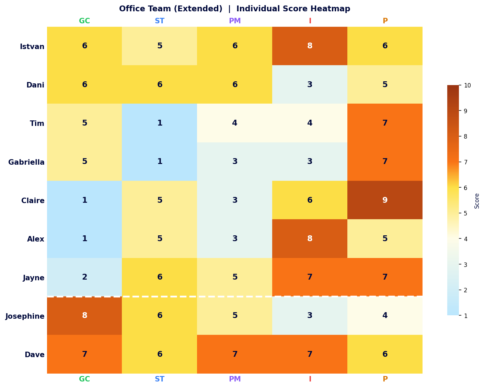
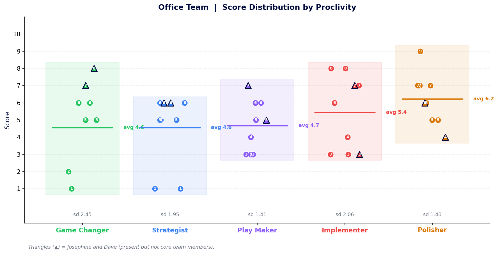
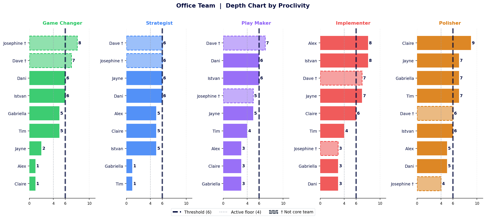
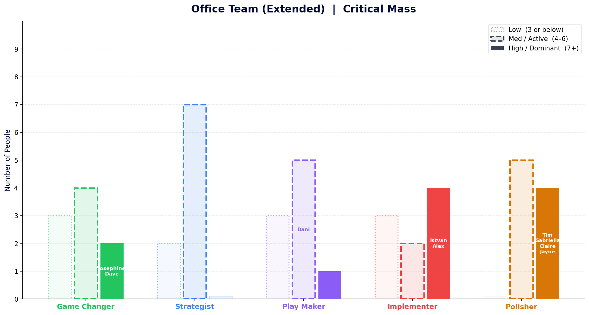

The whole room in one grid
Balance is restored!

Where the room is aligned and where it splits
Polisher still holds the room together. The Game Changer gap in the core team is now visible by contrast with who just joined it.

Who owns each energy and how thin the bench gets
Two of the three strongest Game Changer and Play Maker scores come from outside the core team. The session is the opportunity to use them.

Josephine tops the Game Changer ranking at 8, with Dave second at 7 – both from outside the core team. Strip them out and the bench drops immediately to 6. The Play Maker column follows the same pattern: Dave leads at 7, again from outside. Polisher is the only column where the full bench, core team and extended members alike, clears the Active threshold without exception.
Where does critical mass sit?
For the first time in this project, someone leads with Game Changer. Two people, in fact. Make that count.

Names appear in each column only where that proclivity is the person’s highest energy. Josephine and Dave both lead with Game Changer, bringing the room’s only Dominant GC presence. Istvan and Alex lead with Implementer; Dani leads with Play Maker; Tim, Gabriella, Claire and Jayne all lead with Polisher. That is four people whose natural first instinct is quality and completion – a genuine team strength.
Within the core seven, Game Changer and Strategist remain nobody’s primary energy. Josephine and Dave in the room change the conversation; when they leave, that structural picture returns.
With nine people, the Game Changer column now spans from 1 to 8 – the full range is represented. Josephine (8) and Dave (7) sit at the top of GC, stretching the average up from 3.7 to 4.8. The Implementer split remains the most extreme: three people at 7 or 8, three at 3 – the average of 5.7 still describes nobody.
Polisher remains the most consistent column across all nine, with every person scoring between 4 and 9. It is the one energy where the whole room is genuinely in the same territory.